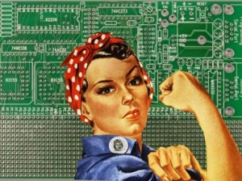

Gender Diversity in a (thus-far) Male Dominated Field
I googled "Problems facing the Tech World", to get a sense of what to write about for this week's cultural blog entry. By far the most commonly identified BIG PROBLEM IN TECH CULTURE was sexism within the boys' club of the tech field.

This NY Times piece, and this New Yorker piece each detail the problems really well.
The rest of this entry will engage with An Open Letter on Feminism In Tech, a collaboratively written piece by some leading women in tech, including leadership at Adobe, Buzzfeed, The Flatiron School, Kickstarter, and Mozilla... a heavy hitting tech crew regardless of gender.
I'll quote some salient points and respond to each from a student's perspective at DBC.
"If you see someone engage in bad behavior and you do nothing, you've chosen to let that person think that what they did is okay. This leaves us feeling like we're fighting this alone. We can't work on what we can't see, but if you're there when it happens, you can help. It is absolutely imperative that men work with other men to combat bad attitudes and behavior."
One of the many privileges of DBC is the degree to which respect and accountability are emphasized as part of the curriculum. I'm encouraged to see women on the teaching staff. Our student body does seem diverse, though there certainly is a significant majority of men. In this context, it is really exciting to me that there is such a good system for sharing feedback. The transparency seems like it will make for an empowering experience for everyone. As Shereef said in the 'Fireside Chat' we watched a few weeks ago, it seems like we are being trained to be positive cultural contributors to tech work spaces as we emerge ready to begin as junior devs.
"Our industry is filled with very smart people. We know that you know how to find the answers to questions you have and also how to challenge an opinion or action you disagree with. Take that same passion that you would apply to technical problems, and apply it to social ones."
As is true for any person or group in power, it is very easy to ignore inconvenient truths. I hope I can see clearly and continue to advocate for a just working space.
"Promote the fuck out of diversity."
So, I'm a white male and and I want a job in tech... BUT YES!! Diversity up the wazzoo.
"While this letter speaks specifically about our experiences as women in tech, to build true diversity in tech we must address more than one aspect of gender, more than any one aspect of our identities. Our efforts must address, and be inclusive of, race, class, sexuality, gender identity and expression, and their intersections. We need to be here for everybody."
Amen. I've loved working as a performing artist, working in incredibly diverse contexts with a diversity of people with a range of diverse experiences. I worry (jewish man, it's what I do...) that I will be giving up this element of the cultural work that I've done. Seems that DBC is devoted to diversity, and creating a positive space for us all to learn + grow in.